中学理科 生物分野（人体） 図で確認・ミニテストで実力チェック
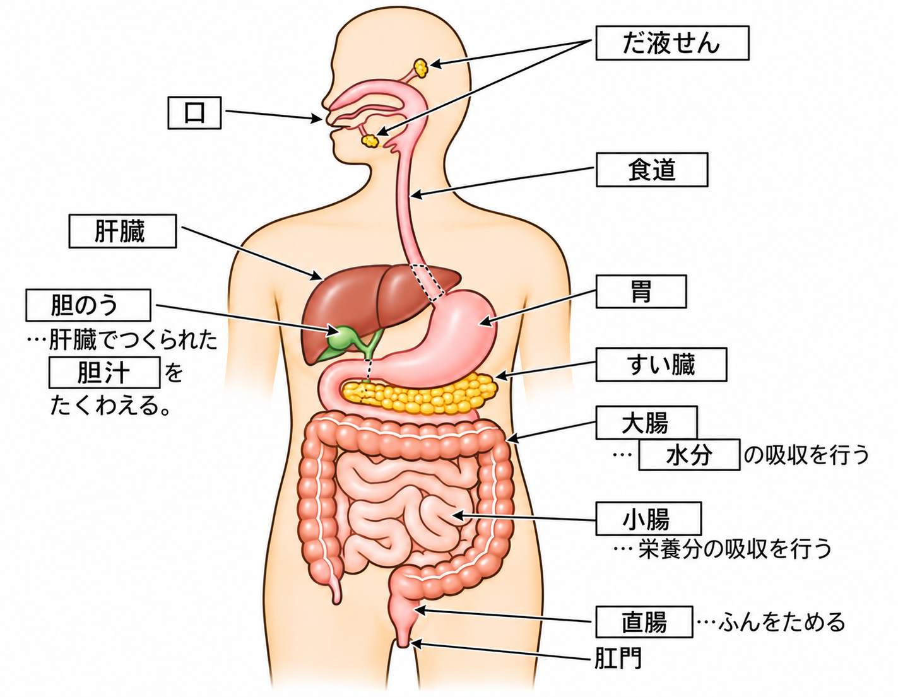
食べたものを、体に吸収しやすい小さな物質に変えるはたらきを消化といいます。
消化を行う口・食道・胃・小腸・大腸などを消化器官、これらがひとつながりになった管を消化管といいます。
消化管に出される液を消化液、その中で栄養分を分解する物質を消化酵素といいます。だ液のアミラーゼや胃液のペプシンが代表的な消化酵素です。
食物を体に吸収しやすい小さな物質に変えるはたらきを①という。①を行う器官を②といい、これらがひとつながりになった管を③という。①を行うために分泌される液を④、④の中で栄養分を分解するはたらきをもつ物質を⑤という。
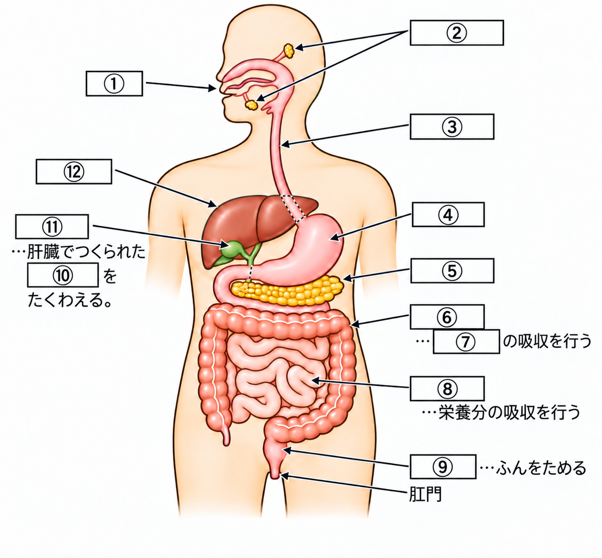
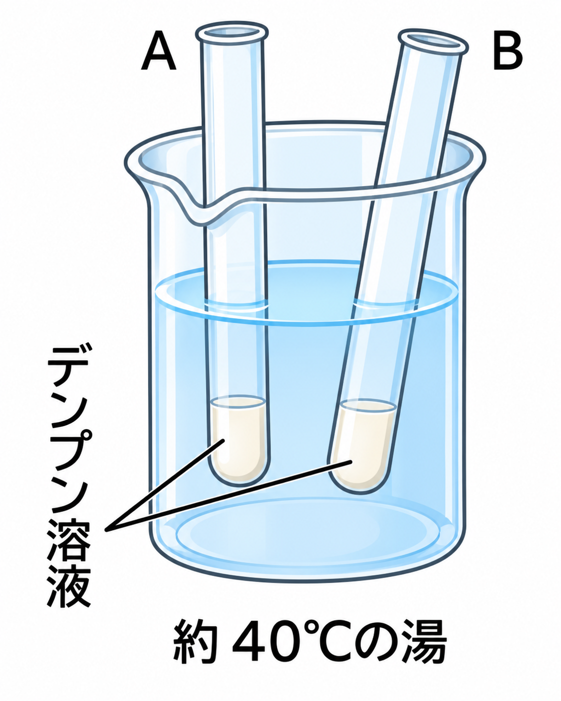
だ液にはアミラーゼという消化酵素があり、デンプンを糖に分解します。
だ液は体温に近い37～40℃でよく働き、70℃以上になるとはたらきを失います。
| 薬品 | 使い方 | 結果 |
|---|---|---|
| ヨウ素液 | 加えるだけ | デンプンがあると青紫色 |
| ベネジクト液 | 加えて加熱 | 糖があると赤褐色の沈殿 |
加熱するときは、突沸を防ぐため沸とう石を入れます。
デンプン溶液だけのA、デンプン溶液とだ液のBを40℃で温めると、Bだけデンプンが糖に変わります。
だ液にふくまれる消化酵素①は、デンプンを②に分解する。デンプンの検出には③を使い、青紫色に変化する。糖の検出には④を使い、加熱すると赤褐色の沈殿ができる。加熱時は突沸を防ぐため⑤を入れる。
セロハンの膜には小さな穴があり、小さな粒だけを通し、大きな粒は通しません。
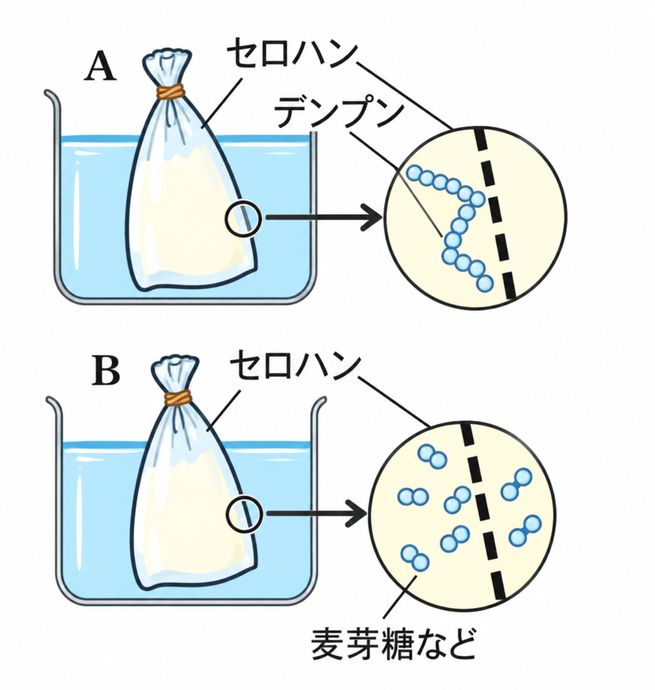
【実験】
Aには、デンプン溶液のみをセロハンの袋に入れ、水に浸します。
Bには、デンプン溶液にだ液を加えたものをセロハンの袋に入れ、水に浸します。
問）Aのセロハンの袋の内側と外側、Bのセロハンの袋の内側と外側の部分で、それぞれヨウ素反応・ベネジクト反応が起こるかどうか答えなさい。
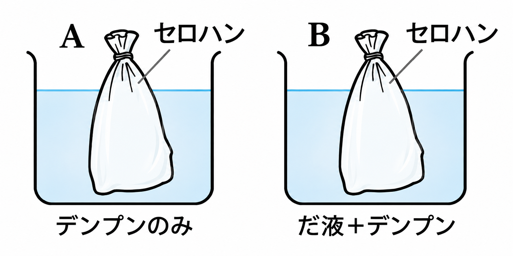
この実験では、セロハンの袋の内側の液と、袋の外に出た外側の水の両方を調べます。
| ヨウ素反応 | ベネジクト反応 | |
|---|---|---|
| Aの内側 | ○ 青紫色になる | ✕ 変化なし |
| Aの外側 | ✕ 変化なし | ✕ 変化なし |
| Bの内側 | ✕ 変化なし | ○ 赤褐色の沈殿 |
| Bの外側 | ✕ 変化なし | ○ 赤褐色の沈殿 |
Aにはだ液を加えていないので、袋の中はデンプンのままです。デンプンの粒は大きいためセロハンの外に出られず、内側だけヨウ素反応が起こり、外側はヨウ素反応・ベネジクト反応ともに変化しません。
Bはだ液のはたらきでデンプンがほぼすべて糖に変わっているため、内側でもヨウ素反応は起こりません。糖の粒は小さいためセロハンを通り抜けられるので、内側だけでなく外側の水にもベネジクト反応が現れます。
セロハンの穴は①な粒だけを通し、②な粒は通さない。Aの袋（③のまま）を入れた水は変化しなかったが、Bの袋（分解された④）を入れた水はベネジクト液で⑤の沈殿ができた。
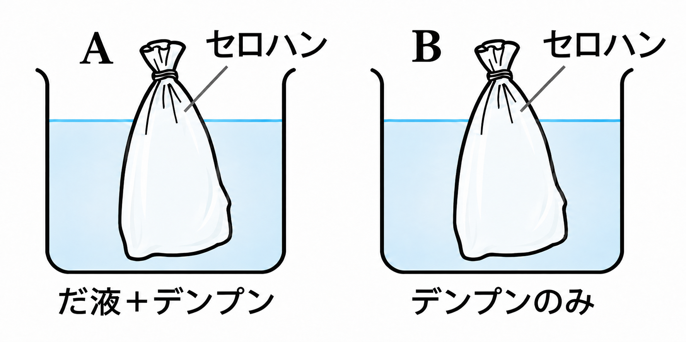
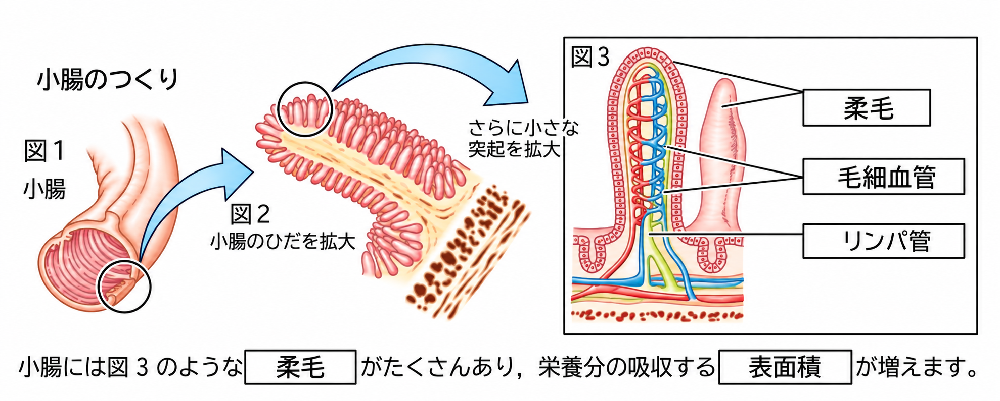
デンプン・タンパク質・脂肪は消化液によって分解され、小腸で吸収されます。
小腸の内側には図のような柔毛という小さな突起が多数あり、吸収の表面積を大きくしています。
デンプンはブドウ糖、タンパク質はアミノ酸、脂肪は脂肪酸とモノグリセリドに分解されます。ブドウ糖とアミノ酸は柔毛の中の毛細血管に、脂肪酸とモノグリセリドはリンパ管に吸収されます。
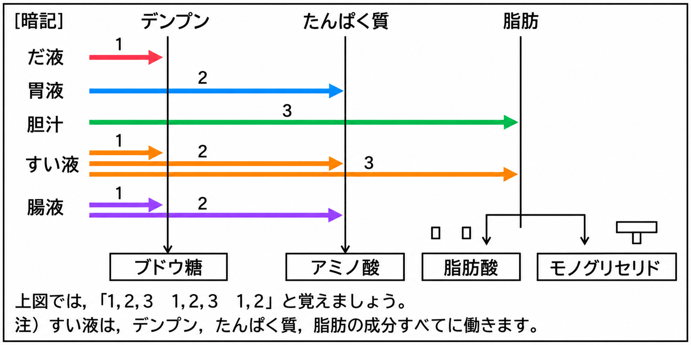
小腸の内側には①という突起があり、吸収の②を大きくしている。デンプンは③に、タンパク質は④に、脂肪は⑤とモノグリセリドに分解されて吸収される。
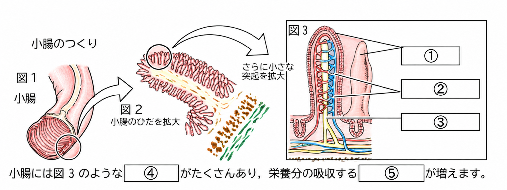
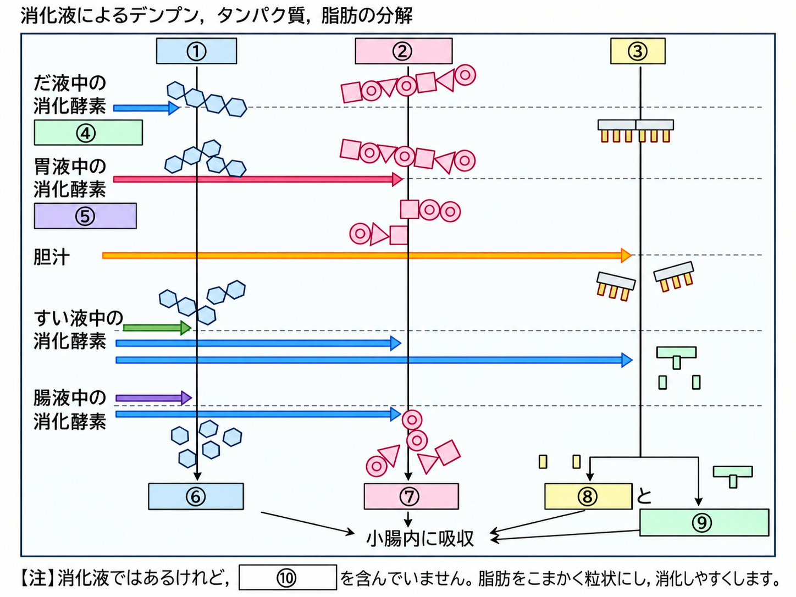
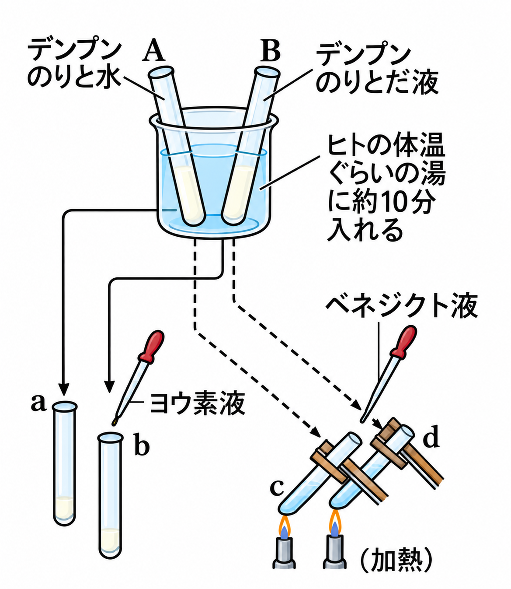
右の図のように、試験管A、Bを体温くらいの湯に10分間入れてあたためた。試験管A・Bの液をそれぞれ試験管a～dに分け、a、bにヨウ素液を、c、dにベネジクト液を加えて実験した（A→a・c、B→b・d）。これについて、次の問いに答えなさい。
なお、試験管Aにはデンプンのりと水を、試験管Bにはデンプンのりとだ液を入れてある。
さらに、試験管A・Bの液をそれぞれセロハンのふくろに入れ、ビーカーの水につけたまましばらく放置してから、ビーカー側の水を調べた。
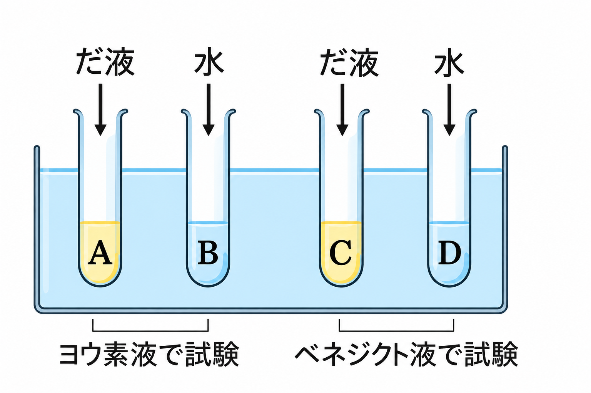
右の図のように、4本の試験管A～Dにうすいデンプン溶液を同量ずつ入れ、A・Cにはだ液を、B・Dには水を加えて、A～Dを約40℃の湯に10分間入れた。
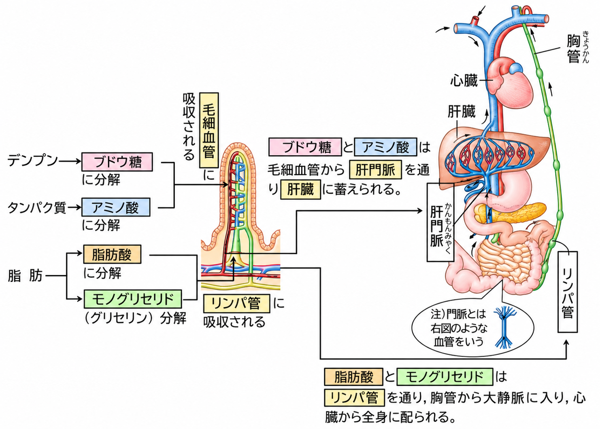
毛細血管に吸収されたブドウ糖とアミノ酸は、「肝門脈」という血管を通って肝臓にたくわえられます。
リンパ管に吸収された脂肪酸とモノグリセリドは、「胸管」という管を通って大静脈に入り、心臓から全身に配られます。
門脈とは、内臓から出た血液が心臓に戻る前に別の器官を通る血管のことです。
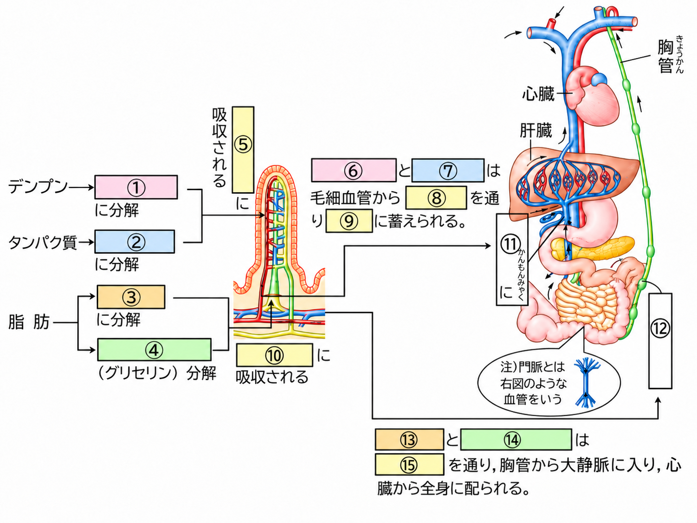